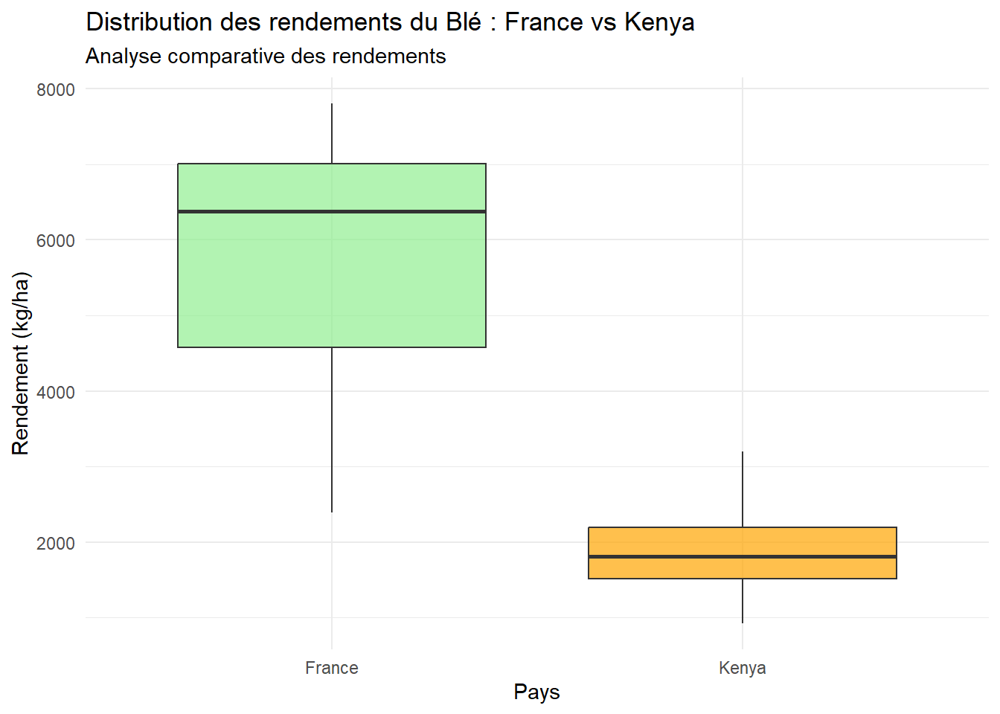
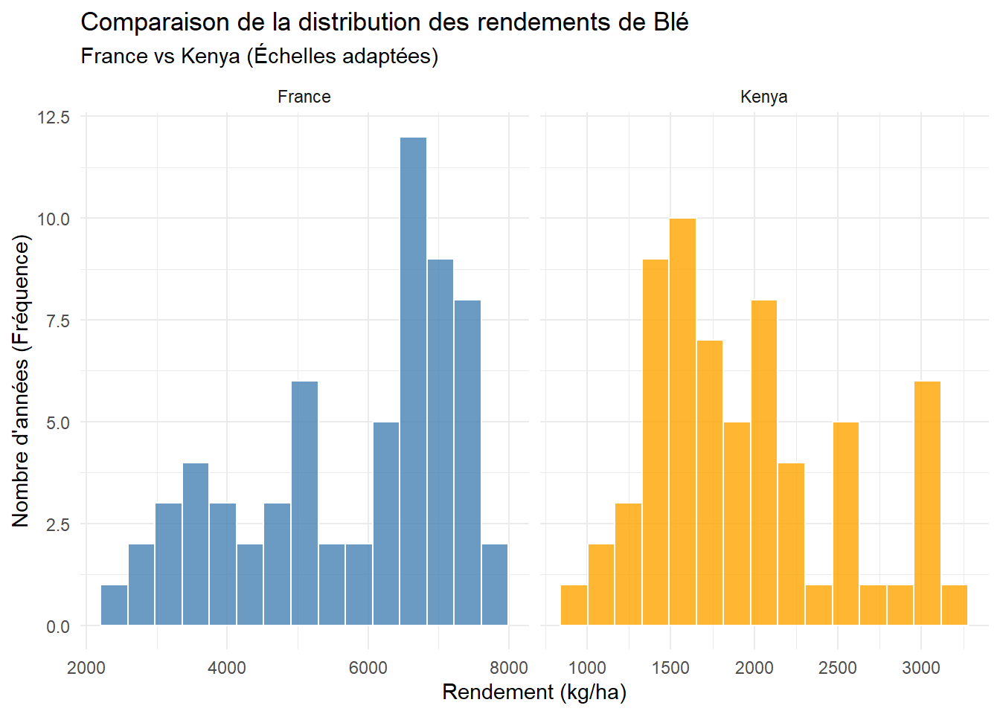
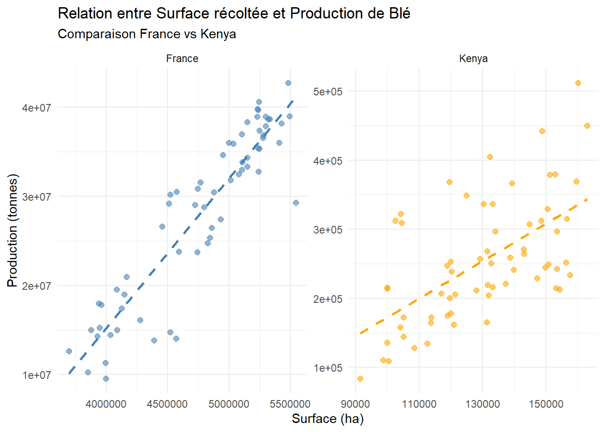

# ========================================
# ANALYSE EXPLORATOIRE : FRANCE / KENYA
# Groupe : Noms Etudiants ...
# ========================================
# ----------------
# | Introduction |
# ----------------
# Nous avons choisi de comparer la France et le Kenya sur la culture du Blé.
# Cette comparaison est pertinente car elle oppose un leader mondial de
# l'exportation (France) à un pays dont la sécurité alimentaire dépend
# de l'amélioration de ses rendements céréaliers (Kenya).
# ...
# ---------------------------
# | Préparation des données |
# ---------------------------
# [Insérez ici votre code pour la préparation des données]
# ---------------------
# | Analyse univariée |
# ---------------------
# [... ne pas oublier d'interpréter vos résultats ...]
# ---------------------
# | Analyse bivariée |
# ---------------------
# [... ne pas oublier d'interpréter vos résultats ...]
# --------------
# | Conclusion |
# --------------
# [Tenter une conclusion globale de votre analyse]Première Analyse en Statistique Descriptive
Introduction
Vous allez effectuer votre Première Analyse en Statistique Dscriptive (PASD) avec l’environnement de développement libre et gratuit, RStudio.
Ce travail s’effectuera en groupe de 4 ou 5 étudiants, pour un total de 10 groupes sur la promotion.

Ce projet consiste à réaliser une étude statistique comparative entre deux systèmes agro-alimentaires contrastés, l’europe occidental et l’hemisphère du sud (par exemple la France et le Kenya), en s’appuyant sur les données de la FAO.
À l’aide de RStudio et de l’interface Quarto, vous allez concevoir un tableau de bord interactif (Dashboard) qui synthétise les dynamiques de production végétale, l’efficacité des rendements et les enjeux de sécurité alimentaire sur les deux dernières décennies.
Ce travail vous place dans une posture d’ingénieur analyste : il ne s’agit plus seulement de calculer des chiffres, mais de faire parler les données pour mettre en lumière les forces et les vulnérabilités de modèles agricoles différents.


Objectifs
Les objectifs sont multiples :
Maîtrise de la “Data Ingénierie” : Apprendre à extraire, nettoyer et structurer des données brutes complexes (gestion des unités, traitement des valeurs manquantes).
Application des Statistiques Descriptives : Mobiliser les outils de base (moyennes, écart-types, coefficients de variation) pour quantifier la stabilité des récoltes et comparer les productivités nationales.
Analyse Agronomique Critique : Interpréter les résultats graphiques (courbes de rendement, surfaces cultivées) à la lumière des contextes pédoclimatiques et socio-économiques (climat tempéré vs tropical, agriculture intensive vs extensive).
Communication Scientifique : Synthétiser des informations multidimensionnelles dans un outil visuel professionnel et ergonomique, capable de transmettre un message clair à des décideurs.
Visualisation du rendu final
Pour mieux appréhender les attentes de ce projet, vous pouvez consulter cet exemple de dashboard interactif. Il illustre la manière dont les données brutes de la FAO sont transformées en indicateurs visuels et dynamiques pour l’aide à la décision.
Timeline
JUSQU'AU 27 MARS
Step 1 & 2 : Mise en contexte
Étude bibliographique et statistiques descriptives. Livrable : Données nettoyées et exploration initiale.
03 AVRIL
Cadrage et objectifs
Validation définitive de la problématique et formulation des hypothèses de recherche.
AVRIL (MOIS COMPLET)
L'analyse statistique
Analyses approfondies sur RStudio (tests d'inférence, corrélations) en lien avec les cours de statistiques.
DEBUT MAI
Mise en forme
Production du rapport Word via Quarto.
DIMANCHE 24 MAI 2026
Clôture du projet
Les rapports doivent être déposés via ce lien .
Dossier de travail
Vous pouvez retrouver via ce lien la liste des groupes.
Travail à faire .
Il vous est demandé de synchroniser votre dossier de travail sur votre ordinateur personel, comme indiqué à ce lien.
Bases de données
Extraire les données de souveraineté alimentaire.
L’objectif est de récupérer quatre fichiers CSV distincts.
Afin d’accéder à la plateforme, allez sur le site FAOSTAT.
Dans la barre de menu supérieure, cliquez sur l’onglet Données.
L’objectif est de récupérer quatre fichiers CSV distincts pour chaque domaine listé ci-dessous.
Production

Sélectionnez Cultures et produits animaux.
Dans le quadran PAYS sélectionnez les deux pays de votre groupe, ici France et Kenya.

Dans le quadran Éléments sélectionnez Superficie récoltée, Rendement et Production - Quantité.

Dans le quadran Produits sélectionnez Maïs et Blé.

Dans le quadran Années sélectionnez Tout sélectionner.

Cliquez sur Télécharcher les données.

Valeur de la production
Sélectionnez Valeur de la production agricole.
| Pays | France et Kenya |
| ÉLÉMENTS | Production Brute (millier US$) |
| GROUPES DE PRODUITS | Agriculture (total) et Élevage (total) |
| ANNÉE | Toutes les années |
Sécurité alimentaire et nutrition

Sélectionnez Domaine de la sécurité alimentaire.
| Pays | France et Kenya |
| ÉLÉMENTS | Valeur |
| PRODUITS | Indicateurs 21010 et 21013 |
| ANNÉE | Toutes les années |
Démographie

Sélectionnez Séries temporeles annuelles.
| Pays | France et Kenya |
| ÉLÉMENTS | Population totale, Population rurale et Population urbaine |
| PRODUITS | Population-Estimations |
| ANNÉE | Toutes les années |
Sauvegarde des bases de données
Les bases de données récupérées sur FAOSTAT doivent être sauvegader dans le dossier data_raw de votre dossier OneDrive de ce projet PASD. Vous utiliserez les dénominations suivantes :
la base de données issues de Production sera renommée
production.csvla base de données issues de Valeur de la production sera renommée
valeur_production.csvla base de données issues de Sécurité alimentaire et nutrition sera renommée
securite_alimentaire.csvla base de données issues de Démographie sera renommée
demographie.csv
Première analyse
L’objectif est que vous réalisiez une analyse statistique exploratoire (univariée et bivariée) sur l’une des bases de données téléchargées, pour le binôme de pays choisi par votre groupe.
Ce travail doit être effectué exclusivement dans un script R (fichier .R).
Rappel
On rappelle que les commentaires et tout texte explicatif doivent être précédé du symbole # pour ne pas bloquer l’exécution du code.
Instructions de rédaction :
Introduction : Votre script doit débuter par une courte introduction motivant le choix des pays et la pertinence des variables sélectionnées.
Préparation des données : Partie plus technique, mais qui doit être commentée.
Analyse univariée : Analyse univariée pour une vriable et ce pour chaque pays. Interpreter vos résultats.
Analyse bivariée : Analyse univariée pour une vriable et ce pour chaque pays. Interpreter vos résultats.
Conclusion : Donner une interprétation de vos résultats au global.
Le code R ci-dessous vous montre la structure que votre fichier R doit avoir.
Remarque
Votre code doit être intelligible pour un tiers. La présence de commentaires abondants et pertinents au sein de votre fichier R est un critère essentiel de réussite.
Prenez le temps d’expliciter vos choix (pourquoi cette fonction ? pourquoi ce graphique ?) et d’interpréter vos résultats (que nous disent les chiffres sur la réalité du pays ?) directement sous forme de commentaires. Un code qui “parle” est le signe d’une analyse maîtrisée.
Exemple France / Kenya
Pour vous guider, j’ai réalisé une démonstration basée sur le fichier production.csv pour le couple France / Kenya.
Cette étude propose une analyse comparative de la filière blé entre la France et le Kenya sur les deux dernières décennies. Nous explorons les dynamiques de production à travers trois indicateurs clés : les surfaces cultivées, les rendements à l’hectare et la production totale. L’objectif est de quantifier l’efficacité de ces deux modèles agricoles contrastés.
Préparation des données
On va avoir besoin de ces packages tidyverse.
library(tidyverse)On importe nos données depuis le fichier `production.csv.
# IMPORTATION DES DONNEES
raw_fao_prod <- read.csv("data_raw/production.csv")On réorganise nos données pour avoir un tableau plus facile à manipuler pour nos analyses.
# NETTOYAGE DES DONNEES
fao_prod <- raw_fao_prod |>
# Sélection des colonnes
select(Zone, Produit, Élément, Année, Unité, Valeur) |>
mutate(
# Nettoyage des espaces sur les colonnes de texte
Zone = str_trim(Zone),
Produit = str_trim(Produit),
Élément = str_trim(Élément),
Unité = str_trim(Unité),
# Simplification des noms de produits
Produit = case_when(
Produit == "Maïs" ~ "Mais",
Produit == "Blé" ~ "Blé",
TRUE ~ Produit
),
# Simplification des noms d'éléments
Élément = case_when(
Élément == "Superficie récoltée" ~ "Surface",
Élément == "Rendement" ~ "Rendement",
Élément == "Production" ~ "Production",
TRUE ~ Élément
)
)On verifie que les données pour les variables Production, Rendement et Surface sont toutes avec des unités cohérentes.
table(fao_prod$Élément, fao_prod$Unité)
ha kg/ha tonnes
Production 0 0 256
Rendement 0 256 0
Surface 256 0 0On constate que les données pour Production sont toutes en ha, les données Rendement sont toutes en kg/ha et les données pour Surface sont toutes en tonnes.
On réarrange le tableau de données pour avoir les modalités de la variables Élément, c’est à dire Production, Rendement et Surface en colonne.
production <- fao_prod |>
# On ne garde que les colonnes nécessaires
select(Zone, Produit, Année, Élément, Valeur) |>
# On transforme les lignes de la colonne Élément en colonnes distinctes
pivot_wider(
names_from = Élément,
values_from = Valeur
) |>
# On renomme les colonnes
rename(
`Pays` = Zone,
`Céréale` = Produit,
`Année` = Année,
`Surface` = Surface,
`Rendement` = Rendement,
`Production` = Production,
)Analyse univariée
L’analyse univariée se concentre sur le rendement (kg/ha), qui est l’indicateur principal de la performance technique.
# On filtre les données pour la France et le Blé, et on s'interesse uniquement au rendement
france_rdt_ble <- production |>
filter(Pays == "France", Céréale == "Blé") |>
select(Rendement)
# On filtre les données pour le Kenya et le Blé, et on s'interesse uniquement au rendement
kenya_ble <- production |>
filter(Pays == "Kenya", Céréale == "Blé") |>
select(Surface, Rendement, Production) Le tableau ci-dessous synthétise les indicateurs de tendance centrale (moyenne, médiane) et de dispersion (écart-type, variance).
library(gt)
# Fonction pour calculer les stats
calc_stats <- function(df) {
df |>
summarise(
Min = min(Rendement, na.rm = TRUE),
`1er Qu.` = quantile(Rendement, 0.25, na.rm = TRUE),
Médiane = median(Rendement, na.rm = TRUE),
Moyenne = mean(Rendement, na.rm = TRUE),
`3ème Qu.` = quantile(Rendement, 0.75, na.rm = TRUE),
Max = max(Rendement, na.rm = TRUE),
`Écart-type` = sd(Rendement, na.rm = TRUE),
Variance = var(Rendement, na.rm = TRUE)
)
}
# Calcul des stats pour les deux pays
stats_fr <- calc_stats(france_rdt_ble)
stats_ke <- calc_stats(kenya_ble)
# Fusion et mise en forme pour le tableau
stats_compare <- bind_rows(
stats_fr |> mutate(Pays = "France"),
stats_ke |> mutate(Pays = "Kenya")
) |>
pivot_longer(
cols = -Pays,
names_to = "Indicateur",
values_to = "Valeur"
) |>
pivot_wider(
names_from = Pays,
values_from = Valeur
)
# Affichage du tableau avec gt
stats_compare |>
gt() |>
tab_header(
title = "Comparaison Statistique du Rendement",
subtitle = "Blé : France vs Kenya (Données FAOSTAT)"
) |>
fmt_number(
columns = c(France, Kenya),
decimals = 2,
sep_mark = " "
) |>
cols_label(
Indicateur = "Statistique",
France = "France (kg/ha)",
Kenya = "Kenya (kg/ha)"
) |>
tab_options(
heading.background.color = "#2c3e50",
column_labels.background.color = "#f2f2f2",
table.width = pct(100)
)| Comparaison Statistique du Rendement | ||
|---|---|---|
| Blé : France vs Kenya (Données FAOSTAT) | ||
| Statistique | France (kg/ha) | Kenya (kg/ha) |
| Min | 2 395.00 | 921.20 |
| 1er Qu. | 4 580.75 | 1 518.15 |
| Médiane | 6 373.60 | 1 809.95 |
| Moyenne | 5 763.68 | 1 934.53 |
| 3ème Qu. | 7 007.65 | 2 194.72 |
| Max | 7 800.80 | 3 199.10 |
| Écart-type | 1 521.05 | 574.85 |
| Variance | 2 313 591.97 | 330 454.47 |
On observe une différence importante. Le rendement moyen français est environ 3,5 fois supérieur à celui du Kenya. Plus intéressant encore, la médiane française est très proche de sa moyenne, suggérant une distribution symétrique. Au Kenya, la variance élevée par rapport à la moyenne indique une instabilité plus marquée des récoltes.
Le boxplot permet de visualiser la stabilité des systèmes.
library(ggplot2)
library(dplyr)
# Préparation des données, on combine les deux tableaux
data_boxplot <- bind_rows(
france_rdt_ble |>
select(Rendement) |>
mutate(Pays = "France"),
kenya_ble |>
select(Rendement) |>
mutate(Pays = "Kenya")
)
# Tracé des deux boxplots
ggplot(data = data_boxplot,
aes(x = Pays, y = Rendement, fill = Pays)) +
geom_boxplot(alpha = 0.7, outlier.color = "red", outlier.shape = 16) +
scale_fill_manual(values = c("France" = "lightgreen", "Kenya" = "orange")) +
theme_minimal() +
labs(
title = "Distribution des rendements du Blé : France vs Kenya",
subtitle = "Analyse comparative des rendements",
y = "Rendement (kg/ha)",
x = "Pays"
) +
theme(legend.position = "none")
Le boxplot pour la france est située très haut sur l’axe des ordonnées, ce qui témoigne d’une haute performance maîtrisée. Le Kenya présente une boîte plus basse et plus écrasée.
L’histogramme nous permet d’observer si les rendements suivent une distribution normale (cloche) ou s’ils sont instables.
# On combine les données
data_hist <- bind_rows(
france_rdt_ble |>
select(Rendement) |>
mutate(Pays = "France"),
kenya_ble |>
select(Rendement) |>
mutate(Pays = "Kenya")
)
# Tracé des deux boxplots
ggplot(data = data_hist,
aes(x = Rendement, fill = Pays)) +
geom_histogram(bins = 15, color = "white", alpha = 0.8) +
facet_wrap(~Pays, scales = "free_x") +
scale_fill_manual(values = c("France" = "steelblue", "Kenya" = "orange")) +
theme_minimal() +
labs(
title = "Comparaison de la distribution des rendements de Blé",
subtitle = "France vs Kenya (Échelles adaptées)",
x = "Rendement (kg/ha)",
y = "Nombre d'années (Fréquence)"
) +
theme(legend.position = "none")
En utilisant des échelles adaptées, on remarque que la France possède une distribution relativement régulière. Au Kenya, la distribution est plus irrégulière.
Analyse bivariée
Pour un ingénieur agronome, une question importante peut etre : Comment le pays augmente-t-il sa production ? Est-ce en améliorant ses techniques ou en agrandissant ses terres ? On choisit ici d’étudier les variables Production et Surface.
# On filtre les données pour la France et le Blé, et on s'interesse uniquement au rendement
france_ble_prod_surf <- production |>
filter(Pays == "France", Céréale == "Blé") |>
select(Production, Surface)
# On filtre les données pour le Kenya et le Blé, et on s'interesse uniquement au rendement
kenya_ble_prod_surf <- production |>
filter(Pays == "Kenya", Céréale == "Blé") |>
select(Production, Surface) On va tracer le nuage de points de la production par rapport aux surfaces cultivées pour chaque pays.
# Fusion des données
data_nuage <- bind_rows(
france_ble_prod_surf |> mutate(Pays = "France"),
kenya_ble_prod_surf |> mutate(Pays = "Kenya")
)
# Nuage de points avec droite de régression
ggplot(data = data_nuage,
aes(x = Surface, y = Production, color = Pays)) +
geom_point(alpha = 0.6, size = 2) +
geom_smooth(method = "lm", se = FALSE, linetype = "dashed") + # Ajout d'une droite de régression
facet_wrap(~Pays, scales = "free") +
scale_color_manual(values = c("France" = "steelblue", "Kenya" = "orange")) +
theme_minimal() +
labs(
title = "Relation entre Surface récoltée et Production de Blé",
subtitle = "Comparaison France vs Kenya",
x = "Surface (ha)",
y = "Production (tonnes)"
) +
theme(legend.position = "none")
Le nuage de points révèle deux stratégies différentes :
Pour la france la relation semble etre très linéaire. L’augmentation de la production est fortement corrélée à la gestion des surfaces.
Pour le Kenya, les points sont plus dispersés. La surface ne suffit pas à expliquer la production.
# Calcul pour la France
reg_fr <- lm(Production ~ Surface, data = france_ble_prod_surf)
cor_fr <- cor(france_ble_prod_surf$Surface, france_ble_prod_surf$Production)
# Calcul pour le Kenya
reg_ke <- lm(Production ~ Surface, data = kenya_ble_prod_surf)
cor_ke <- cor(kenya_ble_prod_surf$Surface, kenya_ble_prod_surf$Production)
# Affichage des résultats
cat("FRANCE :\n",
"Équation : y =", round(coef(reg_fr)[2], 2), "x +", round(coef(reg_fr)[1], 2), "\n",
"Corrélation (R) :", round(cor_fr, 3), "\n\n")FRANCE :
Équation : y = 16.81 x + -52033200
Corrélation (R) : 0.918 cat("KENYA :\n",
"Équation : y =", round(coef(reg_ke)[2], 2), "x +", round(coef(reg_ke)[1], 2), "\n",
"Corrélation (R) :", round(cor_ke, 3), "\n")KENYA :
Équation : y = 2.71 x + -98698.34
Corrélation (R) : 0.595 Avec un coefficient de corrélation tres proche de 1 (0.92), la France affiche une corrélation quasi-parfaite. Le système est prévisible. Le Kenya, avec un coefficient de corrélation plus faible (0.60), montre une dépendance beaucoup plus aléatoire.
La pente de la droite française (le coefficient de x) est bien plus raide. Cela signifie que chaque hectare supplémentaire mis en culture en France “rapporte” beaucoup plus de tonnes qu’au Kenya.
De la donnée au Dashboard
Ouvrez le fichier dashboard.qmd déjà présent dans votre dossier OneDrive partagé. Nous allons apprendre à construire un dashboard pour illustrer votre travail en statistique descriptive sur R à partir des bases de données récupérées sur FAOSTAT.
L’intérêt d’utiliser Quarto pour ce travail est multiple :
La fiabilité des résultats : Contrairement à un copier-coller manuel dans Excel ou PowerPoint, Quarto lie directement votre code d’analyse à vos graphiques. Cela garantit qu’aucune erreur de manipulation n’est introduite entre le calcul et l’affichage.
La synthèse multidimensionnelle : Vous transformez des données brutes éparpillées en une interface structurée. Quarto permet de regrouper sur une seule page des indicateurs variés (agronomiques, animaux, économiques et démographiques) pour offrir une vue d’ensemble immédiate.
Un support d’aide à la décision : En tant qu’étudiants à l’ISTOM, vous apprenez à produire un document “prêt à l’emploi”. Quarto génère un fichier HTML élégant et figé, facilement consultable sur n’importe quel support, idéal pour présenter un diagnostic territorial clair et définitif.
Ecosystème Quarto
Quarto est un outil pour la réalisation de publication technique et scientifique. Pour un ingénieur, c’est l’outil idéal pour transformer une analyse de données brute en un support de communication professionnel et structuré.
Contrairement à un simple script R, un fichier Quarto (.qmd) est un document hybride qui repose sur trois piliers fondamentaux :
L’en-tête
YAML: Situé tout en haut entre les balises---, il définit la “carte d’identité” de votre document (titre, auteur, format de sortie comme dashboard)Le
Markdown: C’est le texte narratif. II permet de structurer votre analyse avec des titres, des listes et des commentaires, sans nécessiter de connaissances en code.Les
Chunksde code : Ce sont les blocs de code R, à insérer avec le bouton ) qui exécutent vos calculs et génèrent vos graphiques à partir des données FAOSTAT.
) qui exécutent vos calculs et génèrent vos graphiques à partir des données FAOSTAT.
Dans le cadre de ce travail, Quarto va vous permettre de compiler ces trois éléments pour générer un dashboard. Une interface visuelle organisée en lignes et colonnes, capable de résumer en un coup d’œil les enjeux de souveraineté alimentaire de nos deux pays d’étude.
En-tête
Pour commencer il est nécessaire d’éditer le fichier .qmd avec un en-tête spécifique. Je vous invite à copie-coller le code suivant :
---
title: "Première Analyse en Statistique Descriptive"
format:
dashboard:
logo: img/Logo_simple_ISTOM_Couleurs_HD.png
theme: [sandstone, theme/custom.scss]
nav-buttons: [link-45deg]
github: https://github.com/votre-depot
fig-width: 10
fig-asp: 0.4
editor_options:
chunk_output_type: console
---Structure globale
Après avoir configuré votre en-tête (YAML), nous allons structurer l’interface de navigation. La Sidebar est un élément clé du dashboard : elle reste visible sur tous les onglets et permet d’afficher des informations contextuelles ou les crédits du projet.
Il vous suffit de copier et coller le bloc de code ci-dessous juste après les tirets de fermeture --- de votre en-tête dans un chunk R, inséré avec le bouton .
# {.sidebar}
Outil statistiques pour :
| |
|---------------------|
| **Kenya** (Afrique) |
| **France** (Europe) |
<br>
| |
|-----------------------|
| **ISTOM** |
| **Promotion 116** |
| **Année 2025 - 2026** |
| **PASD** |
<br>
::: {.callout-note collapse="true"}
## Auteur-es
| |
|------------|
| Nom Prénom |
| Nom Prénom |
| Nom Prénom |
| Nom Prénom |
:::Une fois la barre latérale en place, nous allons organiser le corps de votre dashboard. Quarto utilise une hiérarchie simple basée sur les titres pour structurer l’affichage :
Les Pages (
#): Créent des onglets de navigation en haut de la page.Les Lignes (
## Row) : Définissent des rangées horizontales.Les Colonnes (
### Column) : Divisent une ligne verticalement pour placer des graphiques côte à côte.
Voici un exemple de structure à copier-coller à la suite de votre code pour créer vos premiers onglets, toujours dans un chunk R, avec le bouton .
# Productions
## Row {height="20%"}
### Rendement Moyen
## Row {height="80%"}
### Comparaison des cultures
# Analyse Macro & Démo
## Row
### Poids Économique
### Dynamique Démographique
# DonnéesLoading packages
Toujours dans un chunk R, avec le bouton , il est indispensable de charger les packages qui permettront de traiter les données et de générer les graphiques.
library(tidyverse)
library(scales)
library(DT)
library(gt)
# Thème visuel pour les graphiques que je propose d'utiliser
theme_set(theme_minimal(base_size = 16))Importation des données
Les fichiers .csv récupérés sur FAOSTAT sont à enregistrer dans votre dossier data_raw.
Vous avez :
un fichier production renomé
production.csvun fichier valeur production renomé
valeur_production.csvun fichier securité alimentaire renomé
securite_alimentaire.csvun fichier démographie renomé
demographie.csv
Toujours dans un chunk R, avec le bouton .
# IMPORTATION DES DONNEES
raw_fao_prod <- read.csv("data_raw/production.csv")
raw_fao_val_prod <- read.csv("data_raw/valeur_production.csv")
raw_fao_secu_alim <- read.csv("data_raw/securite_alimentaire.csv")
raw_fao_demographie <- read.csv("data_raw/demographie.csv")coming.
coming.
Mise en forme par Antoine Géré.